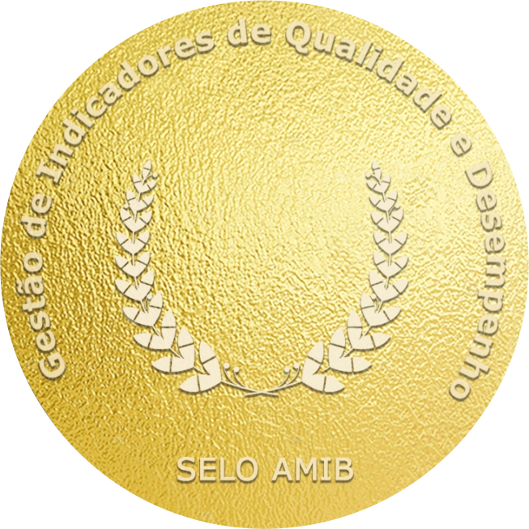
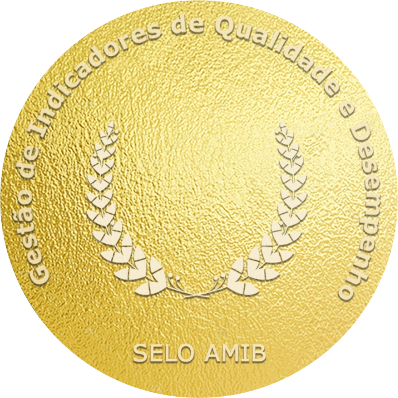

Press "Ctrl + E" or "Cmd + E" in the Designer and enable "Select on-page element".

Search for the class named, "Cloneable Area".

Copy the element inside this container to your own project.
Rename the classes accordingly if they are clashing with your project.
Ensure custom code from the in-page setting has been copied into your project as well (if there's any).
'Page Trigger' interaction can't be copied directly. You can only clone the whole project, or rebuild it.
A simple trick to copy the 'Page Trigger' interaction into another project is as below:
1. Create a dummy element.
2. Apply any type of 'Element trigger' into the dummy element and select the 'Page Trigger' animation.
3. Copy the dummy element with the animations applied into your new project.
4. The animation should have been copied into your project and you can reapply the 'Page Trigger' animation into your project.
If you have further inquiry or need assistance, feel free to contact us.
Lastly, please do not copy this project and claim it as your own. We wish to continue sharing and giving to the community. In order to do so, we will need your cooperation and full support. Thank you very much,
Fundado em 16 de agosto de1956, o Hospital Padre Bernardo, em Bilac/SP, leva o nome popular pelo qual seu principal benfeitor (...)
LER MAIS
O Hospital São Lucas, localizado no município paulista de Garça, foi fundado em 12 de fevereiro de 1950 (...)
LER MAISPrestar Assistência à Saúde dos usuários do Sistema Único de Saúde (SUS) (...)
LER MAIS
Em 01 de dezembro de 2018 , a AHBB|Rede Santa Casa (...)
LER MAISO Posto de Atendimento Imediato (PAI) "Dr. José Zenedin" é uma unidade de saúde localizada em Santa Cruz das Palmeiras (...)
LER MAISO hospital anna cintrar é referência para casos de baixa e média complexidade na região do Circuito das Águas Paulista. (...)
LER MAISPrestar Assistência à Saúde dos usuários do Sistema Único de Saúde (SUS) (...)
LER MAISO Hospital tem funcionamento nas 24 horas do dia, todos os dias da semana (...)
LER MAISO Hospital Estadual de Mirandópolis “Dr. Osvaldo Brandi Faria” é um hospital de média complexidade, inserido no SUS (...)
LER MAISFundado em 1935, o Hospital Regional “Doutor Osíris Florindo Coelho” é uma unidade de saúde (...)
LER MAISFundado em 1935, o Hospital Regional “Doutor Osíris Florindo Coelho” é uma unidade de saúde (...)
LER MAIS
Fundado em 21 de maio de 1956, o Hospital Geral de Promissão “Prefeito Miguel Martin Gualda” (...)
LER MAISCriado em 1944 pelo Governo do Estado de São Paulo e cedido à Legião Brasileira de Assistência (LBA) (...)
LER MAISFundado em 01/12/1938, pelo decreto 9566, foi o primeiro hospital governamental, especializado em tuberculose, (...)
LER MAISO Hospital Geral de Vila Penteado “José Pangella” é uma unidade pública de saúde que atua desde 1990 (...)
LER MAISO Hospital Geral de Vila Penteado “José Pangella” é uma unidade pública de saúde que atua desde 1990 (...)
LER MAIS
Fundado em 21 de maio de 1956, o Hospital Geral de Promissão “Prefeito Miguel Martin Gualda (...)
LER MAISO Hospital Estadual de Mirandópolis “Dr. Osvaldo Brandi Faria” (...)
LER MAISO Centro de Referência de covid-19, ou Hospital de Campanha de covid-19 – Centro Reg. dos Consórcios, (...)
LER MAISO Centro de Referência de covid-19, ou Hospital de Campanha de covid-19 – Centro Reg. dos Consórcios, de Penápolis foi aberto em de Maio de 2020 (...)
LER MAISO Hospital Maternidade Estadual de Caieiras (Serviço de (...)
LER MAISO Hospital Geral de Taipas “Kátia de Souza Rodrigues” é um centro hospitalar localizado no bairro Parada de Taipas (...)
LER MAISO Hospital Geral de Vila Penteado “José Pangella” é uma unidade pública de saúde que (...)
LER MAISO Hospital Geral de Vila Penteado “José Pangella” é uma unidade pública de saúde que atua (...)
LER MAISonstruído na década de 60 e reaberto em dezembro de 2011, a é (...)
LER MAISLeitos de Enfermaria e UTI dedicados ao enfrentamento à covid-19 (...)
LER MAISO Hospital São Lucas, localizado no município paulista de Garça, foi fundado em 12 de fevereiro de 1950 (...)
LER MAIS20 Leitos - Enfermaria covid-19 02 Leitos - Estabilização covid-19.
LER MAISFundado em 16 de agosto de1956, o Hospital Padre Bernardo, em Bilac/SP, leva o nome popular pelo qual seu principal benfeitor (...)
LER MAISComo OSS - Organização Social de Saúde, passamos por diversas auditorias de órgãos públicos e independentes, que atestam a nossa eficiência e responsabilidade. Aqui você encontra publicações periódicas de nossos documentos e demais prestações de contas
Temos ampla experiência em gerenciar unidades de atendimento à saúde. Nosso foco na gestão financeira, administrativa e assistencial garante que os recursos sejam utilizados de forma eficiente e que os serviços prestados sejam de alta qualidade.
Operamos com uma gestão séria e transparente, sempre buscando melhorar a assistência ao paciente e as condições de trabalho dos colaboradores. Nossa abordagem ética e nossas análises constantes asseguram que estejamos sempre alinhados com os melhores interesses de todos os envolvidos.
Colocamos o respeito ao paciente como prioridade, incentivando nossa equipe a se colocar no lugar dos pacientes e seus familiares. Esse compromisso com a humanização do atendimento nos distingue e assegura que o cuidado oferecido seja sempre empático e de qualidade.

© AHBB|Rede Santa Casa 2024, todos os direitos reservados


 
